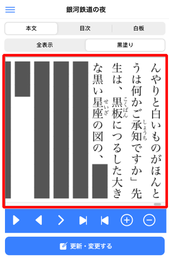

このページには、アプリの開発者向けに、「文章暗記」の開発情報を記述します。
ソースコード
次の２つの GitHubリポジトリで、「文章暗記」のソースコードを公開しています。
- 文章暗記 ionic プロジェクト
https://github.com/mnitta220/bnan - 文章暗記 WebAssembly プロジェクト
https://github.com/mnitta220/bnanw
ionic, TypeScript, WebAssembly, Rust をお使いになる技術者の方に、サンプルプロジェクトとしてご参照いただけるかと思います。
Top
アプリの構成
このアプリは、ionic(TypeScript) と WebAssembly(Rust) が連携する構成で作られています。
アプリのフレームワークとして、「Ionic Framework」(＋Angular) を使用しています。この開発言語は TypeScript です。
アプリの主要な機能は、登録されたテキストを指示に従って表示することです。
入力されたテキストを解析して、黒塗り、横書き／縦書き、目次表示、ルビ振りなどの描画を行います。これらの解析と描画を、Rust という開発言語でプログラミングしています。
テキストの解析結果は、WebAssembly によって、HTMLのcanvas要素に描画しています。
次の画像の、赤枠内が canvasになっており、その描画処理を WebAssembly で行っています。

このような構成としたのは、テキストの解析と描画を、高速に行いたいからです。
TypeScript(JavaScript) のようなスクリプト言語は、開発の容易さでは優れていますが、負荷が掛かる重たい処理には向いていません。WebAssembly + Rust ならば、高速な処理が可能です。
Top
文章暗記 ionic プロジェクト
IndexedDB
アプリで登録された文書のデータは、IndexedDB に保持します。TypeScript で IndexedDB を操作するためのライブラリとして、Dexie.js を使用しています。
次のソースで、Dexie.js による IndexedDB の定義をしています。
/src/app/common/idb.ts
テーブルの内容は、次の通りです。
| テーブル | 内容 |
|---|---|
| Doc | 文書のタイトルなどの基本情報を保持する。 |
| Contents | 文書の行単位の情報を保持する。 |
たとえば、1つの文書の中に10行あった場合、Docが1レコード、Contentsが10レコード作成されます。
文書が更新された場合、バージョン番号を1加算し、旧バージョンのContentsをすべて削除して、新バージョンのContentsを出力します。
Tips
- package.jsonファイルの "dependencies" に、
"bnanw": "file:../bnanw/pkg"
と設定することによって(32行目)、「文章暗記 WebAssembly プロジェクト」が出力した WebAssembly のコードを参照しています。 - 表示されるバナー広告は、AdMob から配信されています。ionic で AdMob を使用するためのライブラリとして、@capacitor-community/admob を使用しています。
- 広告解除のアプリ内課金を行うためのライブラリとして、Cordova Purchase Plugin を使用しています。
Top
文章暗記 WebAssembly プロジェクト
Rust と WebAssembly の橋渡しをするためのライブラリとして、wasm-bindgen を使用しています。
ionic の TypeScript から WebAssembly
のコードを呼び出すエントリポイントは、
/src/lib.rs
にあります。
lib.rs 内の以下の関数がエントリポイントになっています。
| 関数 | 処理名／イベント |
|---|---|
| ping | 疎通確認 |
| load_font | Googleフォントロード処理 |
| set_doc | 文書をセットする |
| set_source | 文書の行をセットする |
| draw_doc | 文書を表示する |
| resize | キャンバスサイズが変更された |
| contents_change | 本文/目次が切り替えられた |
| touch_start | タッチが開始された |
| touch_move | タッチが移動された |
| touch_end | タッチが終了した |
| mode_change | 黒塗りモードが変更された |
| black_step | ツールボタンが押された |
ほとんどの関数は、ユーザーの操作によるイベントの発生を通知するために実行されます。
Tips
- Androidのスマホ、タブレットには、明朝体(セリフ体)のフォントが入っていません。このため、アプリ内にフォントのファイルを持たせ、そのフォントで文字を描画しています。「Google Fonts」で配布されている「Noto Serif JP」というフォントの「NotoSerifJP-Regular.otf」というファイルを、次の場所に入れています。
/resources/NotoSerifJP-Regular.otf
Androidのビルド時に、このファイルを
/src/assets/font/
にコピーしてアプリと一緒に配布し、アプリの実行時に読み込んでいます。
iOSには、明朝体(セリフ体)のフォントが入っているので、アプリ内に「NotoSerifJP-Regular.otf」を入れていません。
Top
開発手順
「文章暗記」のリポジトリをご自分のPCに複製して、開発を行う手順は次の通りです。
- 以下のツールの中で、インストールされていないものがあれば、インストールしてください。
-
「文章暗記」用のディレクトリを作成し、そのディレクトリにリポジトリを
git clone してください。
mkdir bnan
cd bnan
git clone https://github.com/mnitta220/bnan
git clone https://github.com/mnitta220/bnanw
- 次のコマンドで、WebAssembly のビルドを実行してください。
cd bnanw
wasm-pack build
- [初回のみ]
次のコマンドを実行してください。cd ../bnan
npm install
ionic build --prod
- 次のコマンドを実行すると、Webブラウザが起動して、「文章暗記」の画面が表示されます。
ionic serve起動したブラウザが Safari で、メニューの選択がうまくできない場合は、他のブラウザで実行してください。[Google Chrome の場合]
ionic serve --browser="google chrome"
[Firefox の場合]
ionic serve --browser="firefox"
- iOS の場合は XCode で、Android の場合は Android Studio で、パッケージング、動作確認、配布を行います。
その方法については、ionicのドキュメントや書籍などをご参照ください。
Top